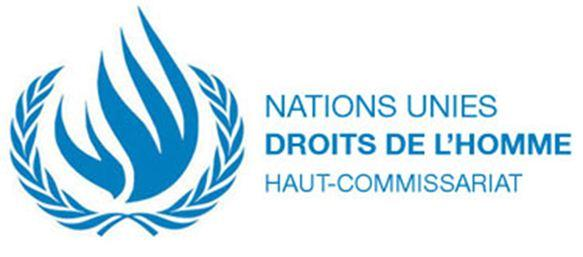
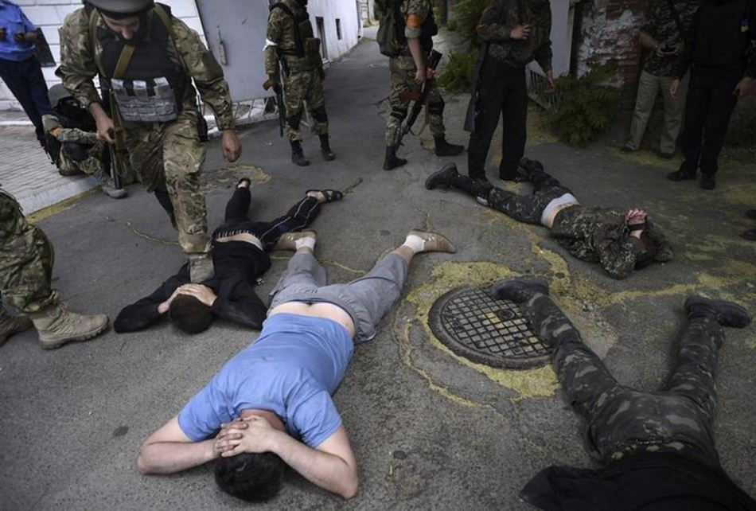
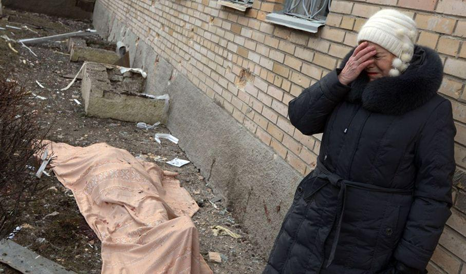

Après deux années de conflit dans le Donbass, l’Organisation des Nations Unies (ONU) reconnaît enfin les violations des droits de l’homme et les actes de barbaries commis par les Ukrainiens.
Selon un nouveau rapport du Haut-Commissariat des Nations Unies aux droits de l'homme publié le 3 juin 2016 : « La situation dans l'est de l'Ukraine reste profondément préoccupante.
Ivan Simonovic, Sous-Secrétaire général aux droits de l'hommeSans des efforts supplémentaires et des solutions créatives pour mettre en œuvre l'Accord de Minsk, elle pourrait évoluer en un “conflit prolongé” qui serait dommageable pour les droits de l'homme pendant de nombreuses années à venir, ou pourrait connaître une nouvelle escalade, avec de terribles conséquences pour une population civile qui n'a déjà que trop souffert », a déclaré le Sous-Secrétaire général aux droits de l'homme, Ivan Simonovic, au terme d'une visite de sept jours en Ukraine.
Les civils sont particulièrement vulnérables aux violations et abus des droits de l'homme. Beaucoup sont exposés au risque de restes explosifs de guerre et de mines, qui ont été responsables de la majorité des pertes civiles ces derniers mois. Le 27 avril 2016, quatre civils ont perdu la vie et huit autres ont été blessés lors d'un bombardement alors qu'ils attendaient à un poste de contrôle sur la route entre Marioupol et la ville de Donetsk. Ces restrictions de mouvement (imposées par Kiev) ont des répercussions directes sur la vie quotidienne des civils, qui ont aussi des difficultés à obtenir des documents officiels d'état civil, à toucher leur retraite ou à accéder à des soins de santé appropriés.
Le 27 avril, aux alentours de 3h du matin, quatre civils, dont une femme enceinte, ont perdu la vie dans des tirs d’artillerie sur un poste de contrôle à Elenovka, à 23 km au sud-ouest de Donetsk et près de 4 km à l’est de la zone contrôlée par les forces armées ukrainiennes
Selon ce même rapport, quelque 9.371 personnes ont été tuées et 21.532 blessées dans l'est de l'Ukraine depuis le début du conflit mi-avril 2014.
Le personnel des droits de l'homme de l'ONU a pu recenser plusieurs cas de violence sexuelle en lien avec le conflit. « Disparitions forcées, détentions arbitraires, torture et mauvais traitements restent des pratiques courantes », accuse le Haut-Commissariat aux droits de l'homme de l'ONU, qui met en cause notamment les services de sécurité SBU, qui font l'objet de critiques particulières dans le document publié par les Nations unies.
« La majorité des allégations suggère que les menaces de viols et autres formes de violence sexuelle sont utilisées comme méthode de mauvais traitement et de torture dans le cadre de détentions arbitraires ou illégales à l'encontre d'hommes et de femmes. Les menaces de violence sexuelle, d'atteinte physique ou de mort contre des femmes de la famille, ou leur détention, sont souvent utilisées pour forcer les détenus à avouer, renoncer à des biens ou à réaliser des actions exigées par leurs auteurs, et comme une condition explicite pour garantir leur sécurité ou leur libération » indique le rapport.
Une délégation de l'ONU pour la prévention de la torture avait déjà dû suspendre sa visite en Ukraine au mois de mai dernier, car elle s'était vu refuser l'accès à des sites de détention situés en territoire contrôlés par le gouvernement ukrainien.

A Marioupol le bataillon Azov et des prisonniers à proximité d'une zone de combats - Photo pool. Reuters
Déjà, en janvier 2015, le Comité contre la torture du Conseil de l'Europe (CPT) évoquait un « nombre considérables » de cas rapportés de mauvais traitements ou de torture de prisonniers en Ukraine. Dans son rapport, le Comité faisait état de « découvertes très préoccupantes », après sa visite en septembre dernier de deux prisons ukrainiennes de la région de Kharkiv, les colonies numéros 25 et 100, et publiait ses observations préliminaires tirées de sa visite.
Le CPT évoquait des cas rapportés de « passages à tabac, de sodomie avec matraque et l'usage de camisoles de force (sur des détenus), de strangulation de l'abdomen avec une corde au point de faire déféquer des prisonniers ». Dans l'un de ces deux centres - la colonie 25 -, la délégation rapportait avoir reçu « un nombre considérable d'allégations de mauvais traitements physiques graves et/ou de torture de prisonniers par des officiers de prison ».
« La délégation a été frappée par l'atmosphère de crainte générale » qui régnait dans ces deux établissements, expliquait le document. Le comité notait notamment la « grande réticence » des prisonniers à parler. Plusieurs d'entre eux auraient ainsi refusé de parler à la délégation, notamment après avoir été approchés par des surveillants.
La délégation appelait alors les autorités de Kiev à lancer rapidement une enquête indépendante pour comprendre comment fonctionnent ces deux prisons et à prendre des mesures adéquates pour assurer que les détenus n'y soient pas soumis à des représailles après avoir témoigné.
Une année est passée depuis l’inspection du CPT mais le constat des traitements inhumains réservés aux prisonniers donetskiens n’a malheureusement pas évolué, comme le rapporte le récent rapport du Haut-Commissariat des Nations Unies aux droits de l'homme.
Par ailleurs, le rapport de l’ONU souligne l’impunité qui couvre toujours les responsables des violences lors des événements de Maïdan à Kiev « il n'y a eu aucun progrès significatif réalisé dans l'enquête et les représentants de haut-rang responsables d'avoir ordonné et supervisé les violences continuent à ce jour d'échapper à la justice. »
Enfin, le rapport met en lumière les atteintes à l'indépendance du système judiciaire, qui restent un obstacle majeur dans les poursuites contre les auteurs identifiés des violences survenues à Odessa.
Le constat des actes de barbarie a donc bien été fait et formalisé par un rapport, mais il y a peu de chances que celui-ci puisse être pris en compte par les Euro-atlantistes pour ouvrir les yeux sur les réalités d’un territoire en guerre, où des civils meurent chaque jour dans l’indifférence la plus totale.

Partager cette page